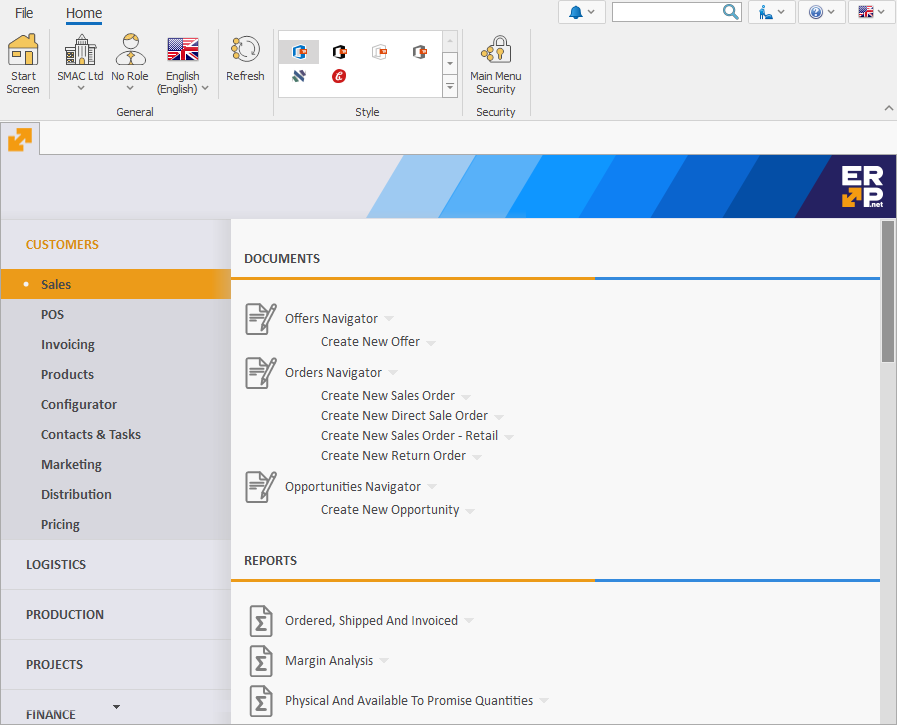
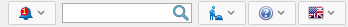

Workspace
The workspace includes the Main menu and all of the different ribbons, tabs and system forms you will need when working with ERP.net Windows Desktop Client.
Here is a pucture of the main menu.

See the ribbon on the top - it contains tabs with different commands (or buttons). Depending on what system form is open (document, navigator/report or definition) and what the positioning of the cursor is, the command ribbon will contain different pages with tools for managing the currently active form.

Above the command ribbon, you can find additional tools that allow you to do quick search, open the user documentation, or choose the system language.

Quick access tool

In this field, you can search for documents, contractors, products, and program menus in the current enterprise company. Press Space and type a part of your searched text. You cannot search for voided documents. Limited number of relative matches will show up under the field. This means that even if your searched document, contractor, etc. is not amoung the results it may still exist in the database.

Help
The Help button opens the following menu:

The menu has 3 sections:
- User help
 Documentation - holds the user manual for working with ERP.net Windows Desktop Client. Another way to access the documentation is the Keyboard shortcuts F1.
Documentation - holds the user manual for working with ERP.net Windows Desktop Client. Another way to access the documentation is the Keyboard shortcuts F1. What’s New - describes the new features of the system.
What’s New - describes the new features of the system. Remote support - access remote support through the built-in Team Viewer.
Remote support - access remote support through the built-in Team Viewer.- Remote support - access remote support through Windows Quick Assist.
- System optimization
 Mouse and Keyboard – choose when working with a computer.
Mouse and Keyboard – choose when working with a computer. Mouse, Keyboard and Touch – choose when working with touch devices that are connected with a mouse and a keyboard.
Mouse, Keyboard and Touch – choose when working with touch devices that are connected with a mouse and a keyboard. Touch Only – choose with touchscreen devices, like smartphones or tablets. The higher access rights, the more options for working with the system.
Touch Only – choose with touchscreen devices, like smartphones or tablets. The higher access rights, the more options for working with the system.
- Interface complexity – every user has preset access rights. A user with higher privilege can ease his work by choosing a user with a lower one (for example Super User can choose to see the functionalities in the system as a Basic User). The options from sections Optimize for use and User interface complexity can be accessed through the File menu >> Settings.
Language
 Choose the language for the system by clicking on this icon.
English and Bulgarian are there by default, but the program allows you to add multiple other languages as well.
Choose the language for the system by clicking on this icon.
English and Bulgarian are there by default, but the program allows you to add multiple other languages as well.
System forms
You can open more than one system form on the workspace: